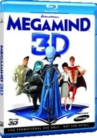
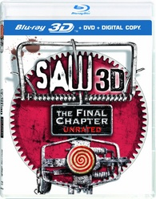
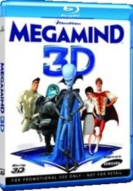
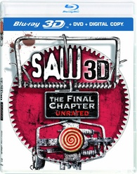
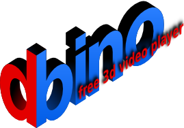

Welkom op de 3D Blu-ray store. De 3D Blu-ray store is een webwinkel waar 3D Blu-ray discs verkocht worden.
 

Op deze Blu-ray discs staan universele 3D formaten die door alle 3D tv's en computers (met een stereoscopic mediaplayer) geïnterpreteerd kunnen worden en zo naar het correcte formaat omgezet kan worden (zowel active als passive 3D).
Als je 3D films wil bekijken zonder 3D tv kan dit altijd op je computer, indien je computer een blu-ray lezer heeft. Voor de software kan je bino (open-source) of stereoscopic 3D player (commercieel) gebruiken.
